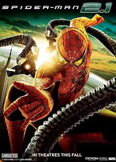

Sobre o Site:
Este site foi criado para compartilha alguns dos meus filmes favoritos. Aqui você encontrará uma seleção variada de gêneros, incluindo ação, drama e ficção científica.
Além disso, organizar as informações de forma simples e acessível, utilizando boas práticas de HTML semântico, o que melhora tanto a leitura quanto a acssebilidade de conteúdo.
Lista de Filmes:
- Homem-Aranha
- Matrix
- O Senhor doas Anéis
- Vingadores: Ultimato
História de Grandes Filmes
Homem-Aranha
A história do homem-aranha acompanha Peter Parker, um jovem estudante que ganha poderes após ser picado por uma aranha modificada geneticamente.
Com seus poderes, ele combate criminosos enquanto tenta equilibrar sua vida pessoal. Opersonagem ficou famoso em várias versões no cinema.
Matrix
Matrix conta a história de Neo, um programador que descobre que o mundo é uma simulação criada por maquinas.
Ao lado de Morpheus e Trinity, Neo luta para libertar a humanidade e descrobir a verdade sobre a realidade.
Senhor dos Áneis
Senhor dos Áneis mostra a jordana de Frodo Bolseiro, um hobbit que precisa destrbuir um anel para impedir que Sauron domine a terra média.
A trilogia é famosa pelas batalhas épicas, personagens marcantes e grande aventura fantástica.
Vingadores
Os vingadores são um grupo de heróis da marvel formado para proteger a terra de ameaças perigosas.
A equipe reúne personagens como homem de ferro, capitão américa, thor e hulk na luta contra thanos.
Tabela de Informações
| Filmes | Ano | Gênero | Nota |
|---|---|---|---|
| Homem-Aranha | 2002 | Ação | 9.7 |
| Matrix | 1999 | Ação | 9.5 |
| O Senhor dos Anéis | 2003 | Ação | 9.0 |
| Vingadores: Ultimato | 2019 | Ação | 8.5 |
| personagem de homem-Aranha | |||
|---|---|---|---|
| Peter parke | Spin | Pantera negra | Hulk |
| Gwen Stacy | Ms.Marvel | Trace-E | Ned Leeds |
| Mj | Tony Stark | Happy Hogan | Mary Jane |
Imagem

Link externo
Visite o Site IMDb para mais informações sobre filmes.